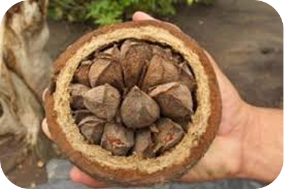
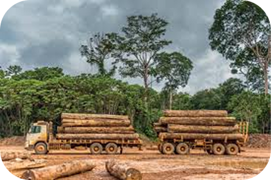
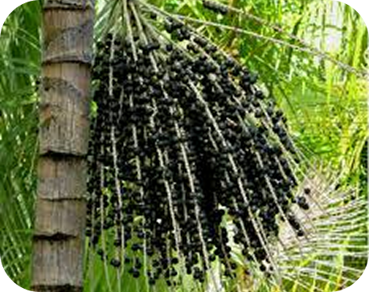

Nossas Riquesas
A extração de borracha em Marabá, no Pará, tem uma história ligada ao ciclo da borracha na Amazônia, que teve seu auge entre o final do século XIX e início do século XX. A borracha natural é obtida a partir do látex da seringueira
Marabá foi um dos principais centros de extração de castanha-do-pará, chegando a ser a maior produtora mundial no passado. Os ouriços (frutos que contêm as castanhas) caem naturalmente das árvores e são coletados
A extração de diamantes em Marabá-PA está inserida na história do garimpo e da mineração na região sudeste do estado do Pará. Trabalhadores utilizavam peneiras e bateias para separar os minerais do cascalho nos leitos e margens de rios.
A atividade madeireira no estado teve um "boom" a partir da década de 1960, impulsionada pela abertura de estradas e pela crescente demanda por madeira. A extração de madeira contribuiu para conflitos entre posseiros, comunidades tradicionais, povos indígenas e grilheiros
O município tem um dos maiores rebanhos bovinos do Brasil. A pecuária em Marabá envolve desde a criação de gado de corte (dominante) e, em menor escala, gado de leite, até o abate em frigoríficos locais e regionais, e a comercialização da carne para mercados internos e externos.
A coleta do açaí é feita principalmente por ribeirinhos, quilombolas e agricultores familiares, que sobem nas palmeiras para cortar os cachos maduros. A venda do produto é uma das principais fontes de renda sazonal para muitas comunidades em Marabá
